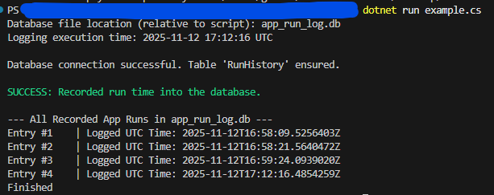
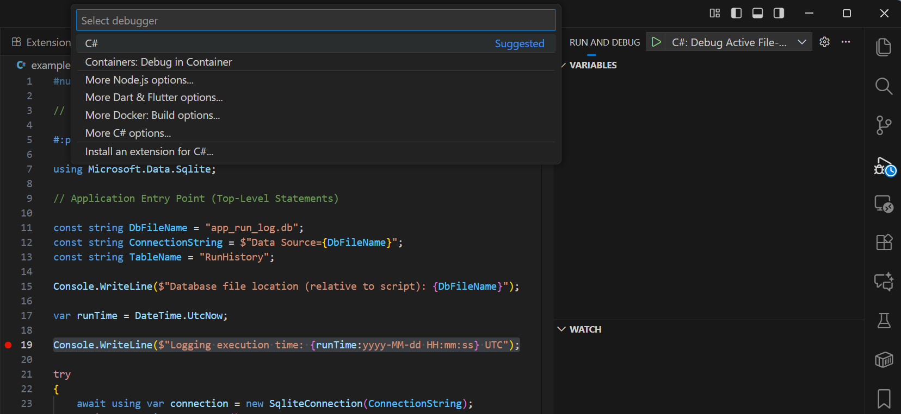
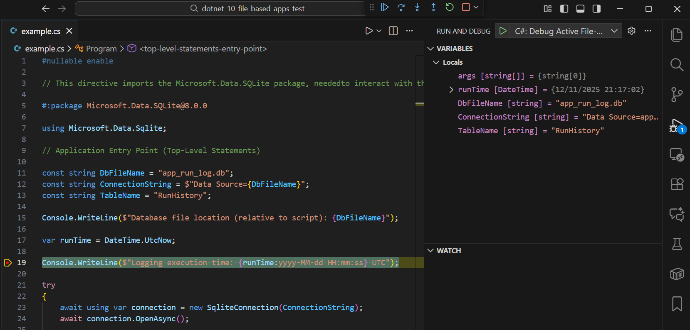

.NET 10 - File Based Apps Demonstration (C# Scripting)
Sample Project (Github ): https://github.com/gbro3n/dotnet-10-file-based-apps-test
This simple app demonstrates the new Microsoft .NET 10 File Based Apps capability.
Now we can use C# where we might have once turned to Python, JavaScript (via Node.js) or another interpreted language. As of today this makes C# a good option for CLI utilities, automation scripts, and tooling, without a full project setup.
C# scripting capability has been previously enabled by the dotnet-script project. I have been using it for running utility scripts such as this deep file contents / file / folder renaming tool, but file based apps makes scripting a first class citizen and removes the need for dotnet tool installation.
This sample script demonstrates the referencing of a Nuget package, using Microsoft.Data.SQLite@8.0.0 to create and write to an SQLite database and read out the table contents.
To run the script, with .NET 10 installed, simply run:
dotnet run example.cs
You can essentially do anything you can in a full Solution / Project based .NET app expose a mini API. Of course as complexity grows you might find you want to upgrade to a project, which .NET 10 also facilitates via dotnet project convert.
dotnet project convert example.cs
C# File Based App Example Script (example.cs)
#nullable enable
// This directive imports the Microsoft.Data.SQLite package, needed to interact with the SQLite database file.
#:package Microsoft.Data.SQLite.0.0
using Microsoft.Data.Sqlite;
// Application Entry Point (Top-Level Statements)
const string DbFileName = "app_run_log.db";
const string ConnectionString = $"Data Source={DbFileName}";
const string TableName = "RunHistory";
Console.WriteLine($"Database file location (relative to script): {DbFileName}");
var runTime = DateTime.UtcNow;
Console.WriteLine($"Logging execution time: {runTime:yyyy-MM-dd HH:mm:ss} UTC");
try
{
await using var connection = new SqliteConnection(ConnectionString);
await connection.OpenAsync();
var createTableCommand = connection.CreateCommand();
createTableCommand.CommandText =
$@"
CREATE TABLE IF NOT EXISTS {TableName} (
Id INTEGER PRIMARY KEY AUTOINCREMENT,
ExecutionTime TEXT NOT NULL
);
";
await createTableCommand.ExecuteNonQueryAsync();
Console.WriteLine($"\nDatabase connection successful. Table '{TableName}' ensured.");
var insertCommand = connection.CreateCommand();
insertCommand.CommandText =
$@"
INSERT INTO {TableName} (ExecutionTime)
VALUES (@ExecutionTime);
";
insertCommand.Parameters.AddWithValue("@ExecutionTime", runTime.ToString("o"));
int rowsAffected = await insertCommand.ExecuteNonQueryAsync();
if (rowsAffected > 0)
{
Console.ForegroundColor = ConsoleColor.Green;
Console.WriteLine($"\nSUCCESS: Recorded run time into the database.");
Console.ResetColor();
}
var selectCommand = connection.CreateCommand();
selectCommand.CommandText =
$@"
SELECT Id, ExecutionTime FROM {TableName}
ORDER BY Id ASC;
";
await using var reader = await selectCommand.ExecuteReaderAsync();
Console.WriteLine($"\n--- All Recorded App Runs in {DbFileName} ---");
if (!reader.HasRows)
{
Console.WriteLine("No previous runs found.");
}
else
{
while (await reader.ReadAsync())
{
long id = reader.GetInt64(0);
string executionTime = reader.GetString(1);
Console.WriteLine($"Entry #{id,-4} | Logged UTC Time: {executionTime}");
}
}
}
catch (Exception ex)
{
Console.ForegroundColor = ConsoleColor.Red;
Console.WriteLine($"\nFATAL ERROR: Could not connect to or write to SQLite database.");
Console.WriteLine($"Details: {ex.Message}");
Console.ResetColor();
}
Console.WriteLine("Finished");
return 0;
Result:

Debugging File Based Apps (using VSCode and C# Dev Kit)
To debug you will need the C# Dev Kit Extension installed in VSCode. From there you just need to start the app using 'Run and Debug' (rather than the dotnet run CLI command) and when prompted select the suggested C# debugger.

From there you will be able to debug and step through like you would a Node.js app or a full .NET project with a launch configuration.

More on .NET 10
For everything else that comes with .NET 10 (and C# 14) you can find out more in the What's new in .NET 10 overview.